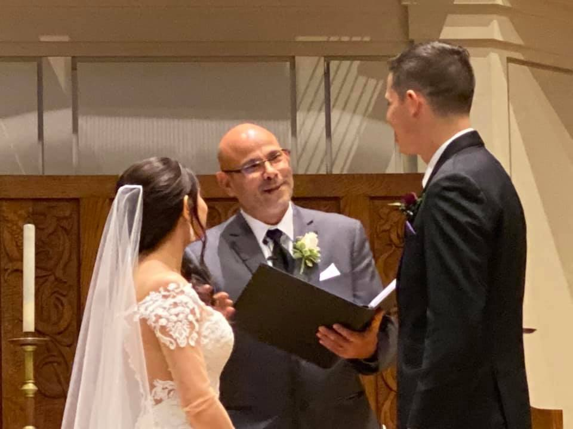

Legal Signing Ceremony
$125
For couples who want the simplest lawful option with a valid New York marriage license.
- Brief legal declaration
- Officiant signature
- Witness coordination
- Marriage license completion
- Appointment-style ceremony
Wedding Officiant & Chaplain Services
Services, Pricing & Ceremony Options
Compare packages, see what each includes, review ceremony styles, and decide what fits your day. If you are not sure, schedule a free consultation and we will talk it through.

Ceremony Leadership
A wedding ceremony deserves preparation, presence, and steady leadership. Every package keeps the legal requirements clear while giving the couple the level of personalization they want.
Packages & Pricing
Every option includes professional officiant service and proper marriage license completion.
$125
For couples who want the simplest lawful option with a valid New York marriage license.
$225
For elopements, backyard weddings, intimate gatherings, and couples who want something simple but meaningful.
Most Couples Choose
$375
A polished, personal ceremony for most full wedding days.
$575
For couples who want deeper personalization and expanded planning support.
Additional Support
Available when additional planning, travel, or ceremony support is needed.
Quick Answers
Yes. The couple must obtain a valid New York State marriage license before the ceremony and have it present on the wedding day.
Yes. Civil ceremonies are available and can still be warm, personal, and meaningful.
Yes. Prayer, Scripture, blessing, Christian language, or other faith elements can be included when desired.
Your date is reserved only after availability is confirmed, the service agreement is completed, and the required retainer is received.
Not Sure Which Option Fits?
We can review your date, location, ceremony style, package fit, and next steps in one conversation.
Schedule a Free Consultation